Unit 04 · CUDA and efficient attention
Lesson 04: CUDA and efficient attention
Unit: cs229s-U04. Concepts: cs229s-U04-C01 to C12. Date: 2026-10-06. Baseline: October 6, 2026. Claim class for every leaf: PLANNED / SOURCE ATTRIBUTION PENDING. Family anchor: CALENDAR-ANCHORED, Week 3, Oct 07, “Hardware Aware Algorithm Design” (presented by Simran): CUDA and GPU Programming for AI, Understanding the Scaling Bottlenecks of Standard Attention, Main Ideas in Efficient Attention Algorithms (Sparsity, Low Rank, Kernelization), Motivating Hardware Aware Design, Profiling Standard Attention and Computing Arithmetic Intensity, Reviewing the GPU execution model, How is attention executed on GPUs, Reviewing Three Key Ideas: Fusion, Tiling, Caching vs. Recompute, Detailed Walkthrough of FlashAttention v1 and v2. Also Oct 11, “Efficient Attention”: Attention Bottlenecks and Attention Approximations to Improve Efficiency, I/O Aware Algorithms: FlashAttention.
How to read this lesson
Same 15-item contract as U01, in compact form. Shared
symbols follow notation_and_shapes.md. CUDA specifics
are taught from the public programming model, no GPU is
needed for the labs (CPU emulation). FlashAttention is
taught from Dao et al. (2022, 2023), not as lecture
content.
C01: threads/warps/blocks
Source, scope, objectives, dependencies
Calendar anchor: Week 3, Oct 07, “Reviewing the GPU execution model”. Scope: the three-level execution hierarchy. Objective: map a problem to threads, warps, blocks. Depends on P15, U02 C02.
Motivating question and tiny toy
Question: 32 threads always move together. What is that group, and why 32? Toy: add 1024 numbers, 256 threads per block.
Mental model
A marching band. A warp is one row of 32 marchers who step in lockstep (SIMT). A block is the whole band section on one field (SM). The grid is all sections. If one marcher takes a different step (divergence), the row does both steps and waits.
Objects, shapes, assumptions
- Thread: one lane of execution.
- Warp: 32 threads, lockstep. 256-thread block = 8 warps.
- Block: runs on one SM, with shared memory.
- Grid: all blocks.
- Assumption: NVIDIA model (warp = 32). Other vendors differ (64), the ideas transfer.
Derivation
1024 elements, 256 threads/block: 4 blocks, 32 warps
total. Warp w in block b covers elements
(b*8 + w)*32 + lane. Divergence: an if that splits
a warp runs both paths serially, halving throughput
for that warp.
Computed example
Toy: 8 warps per block, 4 blocks. A branch taken by 1 lane of a warp: the warp executes both sides, ~2x the time for those instructions. Lab-04 emulates warp voting on a CPU toy.
Implementation and checks
WARP = 32
def warp_of(tid):
return tid // WARP, tid % WARP
assert warp_of(700) == (21, 28)
assert warp_of(0) == (0, 0)
Check: lane in [0, 32). Warp count = ceil(threads/32). Lab-04 checks the mapping.
Complexity and costs
The warp is the scheduling quantum. Think in warps, not threads, when estimating occupancy and divergence.
Nearest alternative and selection boundary
Nearest alternative: think in threads only. Selection boundary: thread view for indexing, warp view for performance. Both are needed.
Failure case and counterexample
Broken assumption: “threads are independent.” They are not inside a warp. Counterexample: a shuffle or vote intrinsic assumes warp lockstep, scattering those threads across warps gives wrong answers.
Research reading and falsifiable extension
Reading: the Oct 07 execution model session. Falsifiable extension: microbenchmark a divergent vs uniform branch at warp granularity. Hypothesis: the divergent version costs ~2x the uniform one. Report both.
Exercises
- E01 (recall): define warp, block, grid in one line each.
- E02 (numerical): 1000 threads. Warps? Blocks of 256?
- E03 (failure diagnosis): kernel with heavy divergence is slow. Name the mechanism.
- E04 (counterfactual): warp size were 1. What breaks and what gets simpler?
- E05 (research): state the divergence-cost hypothesis.
Visual units
- Figure
u04_c01_warps.png: 8 warps of 32 lanes, one warp highlighted with a split branch. Source: original toy. Shell 1.
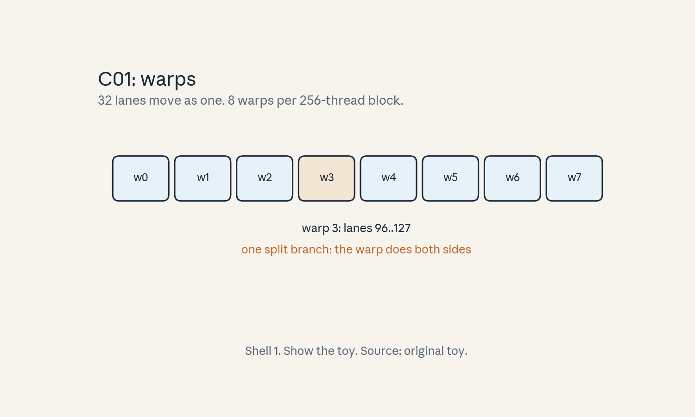
- Audit:
u04c01tof01. Before: threads. After: warps. One rule: group by 32.
C02: coalescing
Source, scope, objectives, dependencies
Calendar anchor: Week 3, Oct 07 (GPU execution model family). Scope: coalesced memory access. Objective: compute transactions for a warp’s access pattern. Depends on U02 C06.
Motivating question and tiny toy
Question: 32 threads read 32 floats. When is that one transaction, and when 32? Toy: fp32, 128-byte lines.
Mental model
A bus stop. 32 riders (threads) boarding one bus (one 128-byte transaction) when they stand together (adjacent addresses). Scattered riders need 32 buses. The hardware merges only adjacent requests.
Objects, shapes, assumptions
- Coalesced: thread
ireads addressbase + i. 32 fp32 = 128 bytes = 1 transaction. - Strided: thread
ireadsbase + i*stride. Stride 32: 32 transactions. - Assumption: 128-byte cache lines, fp32.
Derivation
Warp reads 32 adjacent fp32: bytes [base, base+128), exactly one line: 1 transaction. Stride-32 access: addresses base, base+128, …: 32 different lines: 32 transactions. Bandwidth used: 128 bytes wanted vs 4096 moved, 32x waste.
Computed example
Toy: 1024 fp32, 32 warps. Coalesced: 32 transactions. Stride-32: 1024 transactions. At 2 TB/s, the coalesced read takes ~64 ns of transfer, the strided read ~2 us. Lab-04 emulates the counting.
Implementation and checks
def transactions(stride, nthreads=32, line=128, bpe=4):
addrs = { (i * stride * bpe) // line for i in range(nthreads) }
return len(addrs)
assert transactions(1) == 1
assert transactions(32) == 32
Check: stride 1 always coalesces for fp32. The lab sweeps strides.
Complexity and costs
Coalescing is a 32x lever on memory-bound kernels. It costs nothing but index math.
Nearest alternative and selection boundary
Nearest alternative: shared-memory staging (load strided, then read coalesced from shared). Selection boundary: fix the index math when possible, stage when the pattern is inherent (transpose via shared).
Failure case and counterexample
Broken assumption: “any pattern coalesces if the data is contiguous.” Only warp-adjacent patterns merge. Counterexample: each thread reads a random element of a contiguous array: 32 transactions. Contiguity of data is not enough, contiguity of access is what matters.
Research reading and falsifiable extension
Reading: the Oct 07 session. Falsifiable extension: microbenchmark copy at strides 1..32. Hypothesis: time steps up at each new line touched, ~32x at stride 32. Report the curve.
Exercises
- E06 (recall): define coalesced access in one line.
- E07 (numerical): fp16, stride 8. Transactions per warp?
- E08 (failure diagnosis): kernel moves 32x the expected bytes. Name the pattern.
- E09 (counterfactual): lines were 32 bytes. Stride 1 fp32 transactions?
- E10 (research): state the stride-curve hypothesis.
Visual units
- Figure
u04_c02_coal.png: one bus (1 transaction) vs 32 buses (32 transactions). Source: original toy. Shell 3.
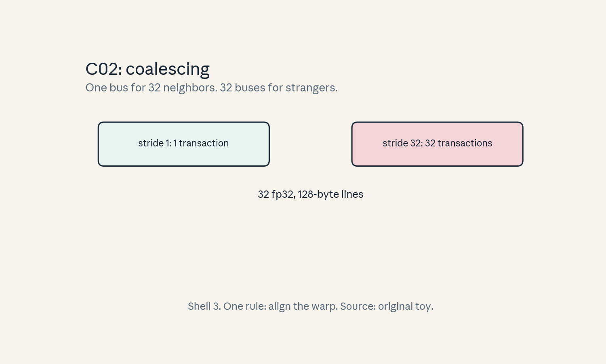
- Audit:
u04c02tof02. Before: scattered. After: adjacent. One rule: align the warp.
C03: tiling
Source, scope, objectives, dependencies
Calendar anchor: Week 3, Oct 07, “Reviewing Three Key Ideas: Fusion, Tiling, Caching vs. Recompute”. Scope: blocking for on-chip memory. Objective: tile a matmul. Depends on U02 C01, C04.
Motivating question and tiny toy
Question: a (1024, 1024) matmul does not fit on chip. How do we still get reuse? Toy: 64x64 tiles, fp16.
Mental model
Floor tiles. You cannot lift the whole floor, so you work one tile at a time: load a tile of A and a tile of B into shared memory, multiply, accumulate, move to the next tile. Each element is loaded O(n/tile) times instead of O(n).
Objects, shapes, assumptions
- Tile (Tm, Tn, Tk): block of the output and the k loop.
- Shared memory holds one A tile + one B tile.
- Assumption: tiles fit in shared memory, the k loop is the reduction axis.
Derivation
Naive: each A element read n times from HBM. Tiled with Tk: each A tile loaded once per output tile row, so A reads drop by ~Tk. For 64-wide tiles on 1024: HBM reads of A drop ~16x.
Computed example
Toy: (64, 64, 64), tile 32. A (64x64) read from HBM: naive 64 times (once per k), tiled: 2 times (two k tiles). Lab-04 counts HBM reads for tiled vs naive on a CPU emulation.
Implementation and checks
def hbm_reads(n, tile):
# A matrix (n,n), tiled along k
return (n // tile) # times each A tile is loaded
assert hbm_reads(64, 32) == 2
assert hbm_reads(1024, 64) == 16
Check: reads scale as n/tile. Bigger tiles mean fewer reads but more shared memory.
Complexity and costs
Tiling does not change FLOPs. It converts HBM reads into shared-memory reads, raising intensity.
Nearest alternative and selection boundary
Nearest alternative: no tiling (stream from HBM). Selection boundary: tile when the working set exceeds on-chip memory and reuse exists. Skip when the whole problem fits in registers.
Failure case and counterexample
Broken assumption: “bigger tiles are always better.” Tiles are capped by shared memory. Counterexample: a 256x256 fp16 tile pair needs 256 KB > shared memory, the kernel fails to launch. Size to the machine.
Research reading and falsifiable extension
Reading: the Oct 07 tiling session. Falsifiable extension: time tiled matmul vs tile size. Hypothesis: time falls with tile size until shared memory caps it, then launch fails. Report the best tile.
Exercises
- E11 (recall): define tiling in one line.
- E12 (numerical): (1024,1024,1024), tile 64. A HBM reads vs naive.
- E13 (failure diagnosis): tiled kernel fails to launch. Name the resource.
- E14 (counterfactual): shared memory were infinite. Best tile?
- E15 (research): state the tile-size hypothesis.
Visual units
- Figure
u04_c03_tiling.png: matrix with tile grid, one A tile + one B tile highlighted moving along k. Source: original toy. Shell 3.
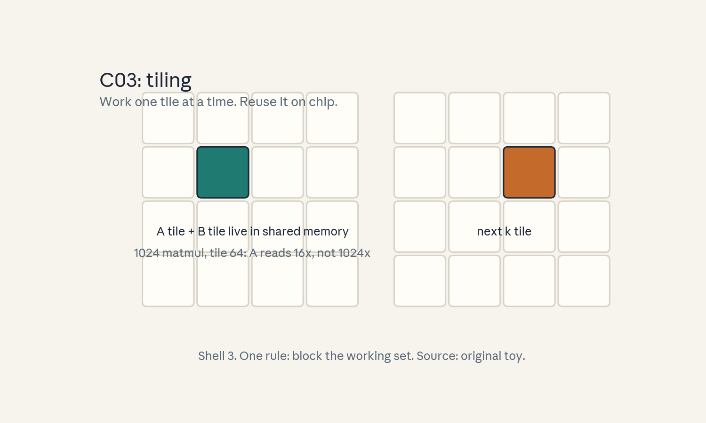
- Audit:
u04c03tof03. Before: whole matrix. After: tiles. One rule: block the working set.
C04: synchronization
Source, scope, objectives, dependencies
Calendar anchor: Week 3, Oct 07 (GPU execution model family). Scope: barriers and fences. Objective: place __syncthreads correctly. Depends on C01.
Motivating question and tiny toy
Question: thread 0 writes shared memory, thread 1 reads it. Who guarantees the order? Toy: 64 threads, one shared array.
Mental model
A roll call. __syncthreads() is the teacher calling “everyone stop until all are here.” No thread passes the barrier until every thread in the block reaches it. Without the call, reads race writes.
Objects, shapes, assumptions
- __syncthreads(): block-wide barrier.
- Memory fence: orders memory visibility (weaker than a barrier).
- Assumption: all threads in the block reach the barrier (divergent barriers deadlock).
Derivation
Tile load: each thread loads one element to shared. Barrier. Compute: each thread reads the full tile. Without the barrier, a fast thread reads a tile element before its loader wrote it: wrong answers, nondeterministically.
Computed example
Toy: 64 threads load 64 elements. With barrier: all reads see all writes. Without: races. Lab-04 emulates the race on CPU with a deliberately racy schedule and shows wrong sums.
Implementation and checks
# CPU emulation of the barrier contract
def tiled_sum_ok(nthreads=64):
import threading
a = [0] * nthreads
barrier = threading.Barrier(nthreads)
out = [0] * nthreads
def w(i):
a[i] = i
barrier.wait()
out[i] = sum(a)
ts = [threading.Thread(target=w, args=(i,)) for i in range(nthreads)]
[t.start() for t in ts]
[t.join() for t in ts]
return all(v == sum(range(nthreads)) for v in out)
assert tiled_sum_ok()
Check: all threads see the full array only with the barrier. Remove it and the test flakes.
Complexity and costs
Barriers cost ~10-20 cycles when converged. The cost is correctness, not speed: missing barriers are bugs, extra barriers are small stalls.
Nearest alternative and selection boundary
Nearest alternative: warp-level primitives (__syncwarp) for warp-only sharing. Selection boundary: block barrier for shared memory across warps, warp sync for warp-local exchange.
Failure case and counterexample
Broken assumption: “barriers are free to sprinkle.”
A barrier inside divergent control flow deadlocks:
threads that never reach it wait forever.
Counterexample: guard the __syncthreads() call with
if (tid < 16) and it hangs.
Research reading and falsifiable extension
Reading: the Oct 07 session. Falsifiable extension: remove barriers one by one from a tiled kernel and record wrong-answer rate. Hypothesis: loads feeding shared reads fail first. Report which barrier.
Exercises
- E16 (recall): what does __syncthreads guarantee?
- E17 (numerical): 64 threads, barrier cost 20 cycles, 1e6 barriers. Total cycles.
- E18 (failure diagnosis): kernel hangs. A barrier sits inside an if. Explain.
- E19 (counterfactual): only warp sync existed. How do blocks share data?
- E20 (research): state the barrier-removal hypothesis.
Visual units
- Figure
u04_c04_sync.png: timeline with threads arriving, barrier line, then all proceeding. Source: original toy. Shell 1.
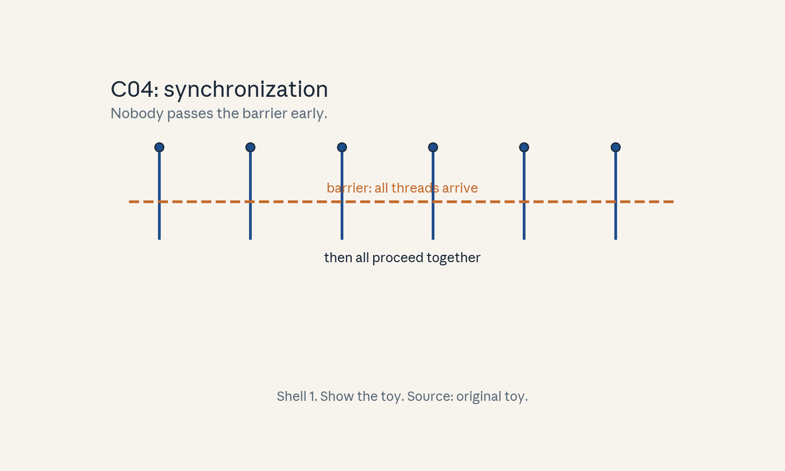
- Audit:
u04c04tof04. Before: racy reads. After: ordered. One rule: wait for all.
C05: occupancy
Source, scope, objectives, dependencies
Calendar anchor: Week 3, Oct 07 (GPU execution model family). Scope: what occupancy is and what limits it. Objective: compute the occupancy bound. Depends on C01.
Motivating question and tiny toy
Question: the GPU can hold 64 warps per SM but your kernel runs 8. What ate the slots? Toy: 256-thread blocks, 48 KB shared per block.
Mental model
Hotel rooms. An SM holds a fixed set of rooms (warp slots, registers, shared memory). Each block books rooms. Occupancy is the fraction booked. A block that books too much shared memory leaves rooms empty.
Objects, shapes, assumptions
- Occupancy = active warps / max warps per SM.
- Limits: threads/SM, registers/thread, shared memory/block.
- Toy: max 64 warps/SM, 256 threads = 8 warps/block.
- Assumption: the kernel is not launch-bound.
Derivation
Blocks per SM = min over resources. Toy: shared 48 KB/block, SM has 100 KB: at most 2 blocks. 2 blocks x 8 warps = 16 warps. Occupancy = 16/64 = 25%. Cutting shared to 24 KB/block allows 4 blocks: 50%.
Computed example
Toy above: 25% -> 50% by halving shared use. Lab-04 computes occupancy for a small table of (block size, shared KB, registers).
Implementation and checks
import math
def occupancy(block_threads, shared_kb, regs_per_thread,
max_warps=64, sm_shared_kb=100,
sm_regs=65536, max_threads=2048):
warps = block_threads // 32
by_threads = max_threads // block_threads
by_shared = sm_shared_kb // shared_kb if shared_kb else 10**9
by_regs = sm_regs // (regs_per_thread * block_threads)
blocks = min(by_threads, by_shared, by_regs)
return blocks * warps / max_warps
assert abs(occupancy(256, 48, 32) - 0.25) < 1e-9
assert abs(occupancy(256, 24, 32) - 0.50) < 1e-9
Check: each limiter can bind. The lab finds which binds.
Complexity and costs
Occupancy is a means, not a goal: it enables latency hiding. Past ~50%, more occupancy rarely helps.
Nearest alternative and selection boundary
Nearest alternative: ignore occupancy, maximize ILP per thread. Selection boundary: raise occupancy when the kernel is latency-bound, trade it for registers (ILP) when compute-bound.
Failure case and counterexample
Broken assumption: “100% occupancy is the goal.” A kernel at 25% with high ILP can beat one at 100% with stalls. Counterexample: the toy at 25% with unrolled math vs 50% spilling registers. Measure, do not worship.
Research reading and falsifiable extension
Reading: the Oct 07 session. Falsifiable extension: vary shared memory per block, measure occupancy and time. Hypothesis: time improves to ~50% occupancy then flattens. Report the knee.
Exercises
- E21 (recall): define occupancy.
- E22 (numerical): toy above. Occupancy at 12 KB/ block?
- E23 (failure diagnosis): occupancy 100% but slow. Name two other suspects.
- E24 (counterfactual): registers were infinite. What limits now?
- E25 (research): state the knee hypothesis.
Visual units
- Figure
u04_c05_occ.png: hotel rooms: 64 slots, 16 filled at 48 KB, 32 at 24 KB. Source: original toy. Shell 6 (change shared KB).
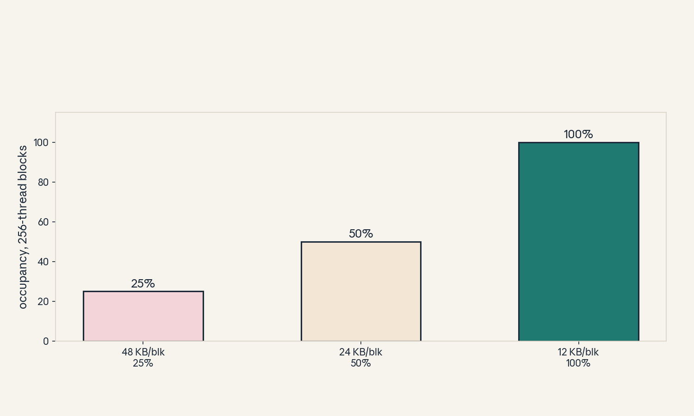
- Audit:
u04c05tof05. Before: 25%. After: 50%. One rule: shrink the booking.
C06: reductions
Source, scope, objectives, dependencies
Calendar anchor: Week 3, Oct 07 (GPU execution model family). Scope: parallel reduction. Objective: write the tree reduction. Depends on C01, C04.
Motivating question and tiny toy
Question: sum 1024 numbers with 256 threads. Toy: values 0..1023.
Mental model
A tournament bracket. Pairs sum, winners advance: 1024 -> 512 -> … -> 1 in 10 rounds. Each round halves the field. The final is one number.
Objects, shapes, assumptions
- Rounds: log2(N). 1024 needs 10 rounds.
- Shared memory holds the bracket.
- Assumption: N is a power of 2 (pad otherwise).
Derivation
Round r: thread i adds a[2i] + a[2i+1] into the next level. Work per round halves: total work 2N, span log N. Barriers between rounds (or warp shuffles in the last warp).
Computed example
Toy: sum(0..1023) = 523776. 10 rounds. Lab-04 runs the tree on CPU and checks against sum().
Implementation and checks
def tree_sum(a):
a = list(a)
while len(a) > 1:
if len(a) % 2:
a.append(0)
a = [a[i] + a[i + 1] for i in range(0, len(a), 2)]
return a[0]
assert tree_sum(range(1024)) == 523776
Check: padding preserves the sum. Rounds = ceil(log2(N)).
Complexity and costs
Work O(N), span O(log N). Reductions are bandwidth-bound: the tree is about moving data, not math.
Nearest alternative and selection boundary
Nearest alternative: serial sum (span O(N)). Selection boundary: tree when N is large and parallel, serial within a warp (shuffle) for the tail.
Failure case and counterexample
Broken assumption: “fewer rounds are always faster.” Unrolling too far wastes shared memory and hurts occupancy. Counterexample: fully unrolled 1024-sum uses 4 KB shared for no gain over 2 elements per thread.
Research reading and falsifiable extension
Reading: the Oct 07 session. Falsifiable extension: time reduction vs elements-per-thread. Hypothesis: 2-4 per thread is best, 1 wastes launch, 16 wastes registers. Report the best.
Exercises
- E26 (recall): rounds for N = 4096?
- E27 (numerical): sum(0..4095) via the tree. Value?
- E28 (failure diagnosis): sum is wrong for odd N. Name the fix.
- E29 (counterfactual): no shared memory. How to reduce?
- E30 (research): state the elements-per-thread hypothesis.
Visual units
- Figure
u04_c06_reduce.png: bracket 8 -> 4 -> 2 -> 1 with sums. Source: original toy. Shell 1.
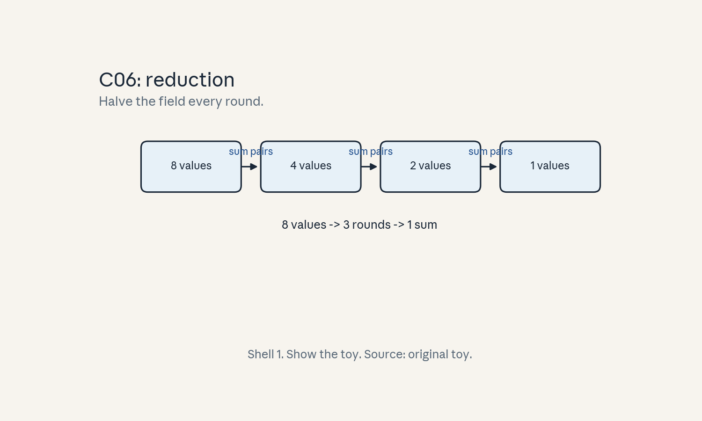
- Audit:
u04c06tof06. Before: 8 values. After: 1 sum. One rule: halve each round.
C07: attention bottleneck
Source, scope, objectives, dependencies
Calendar anchor: Week 3, Oct 07, “Understanding the Scaling Bottlenecks of Standard Attention”. Scope: why standard attention is slow. Objective: name the memory wall with numbers. Depends on U01 C10, U02 C05.
Motivating question and tiny toy
Question: attention FLOPs look fine, but the kernel is slow. Where does the time go? Toy: T = 4096, n = 64, h = 1, fp16.
Mental model
A library with no desk. Standard attention writes the whole T x T score matrix to HBM (the warehouse), reads it back for softmax, writes it again, reads it for the values multiply. Four warehouse trips for one idea. The desk (SRAM) could hold a tile, but the naive code never uses it.
Objects, shapes, assumptions
- Scores: T^2 numbers. T = 4096: 16.7M numbers, 33.5 MB fp16 per head.
- Trips: write scores, read for softmax, write probs, read for AV: ~4 x 33.5 = 134 MB per head.
- Assumption: naive three-kernel implementation.
Derivation
HBM traffic per layer per head: ~4T^2 bytes (fp16: 2 bytes x 2 for read+write x 2 passes). FLOPs: 4T^2n. Intensity: (4T^2n)/(4T^2) = n = 64 FLOP/byte < ridge 150: memory-bound. The bottleneck is bytes, not math.
Computed example
Toy: 134 MB traffic per head at 2 TB/s = 67 us per head just for scores. Real: T = 8192, h = 32: scores 32 x 134 MB = 4.3 GB traffic per layer, 2.1 ms per layer at 2 TB/s. Lab-04 computes this table.
Implementation and checks
def attn_traffic(T, h, bpe=2, passes=4):
return passes * T * T * h * bpe
assert attn_traffic(4096, 1) == 134217728
Check: traffic scales as T^2. The lab plots it.
Complexity and costs
O(T^2) HBM traffic is the wall. FLOPs are a distraction here.
Nearest alternative and selection boundary
Nearest alternative: approximate attention (C08). Selection boundary: exact IO-aware (FlashAttention) when exactness matters, approximations when some error is acceptable.
Failure case and counterexample
Broken assumption: “attention is compute-bound.” At n = 64 the intensity is 64 < 150: memory-bound. Counterexample: a profiler showing 90% DRAM bandwidth on the attention kernel. Believe the profiler.
Research reading and falsifiable extension
Reading: the Oct 07 bottleneck session. Falsifiable extension: profile standard attention vs T. Hypothesis: time scales as T^2 and DRAM bandwidth saturates. Report both.
Exercises
- E31 (recall): name the four HBM trips.
- E32 (numerical): T = 8192, h = 32, fp16. Score traffic bytes.
- E33 (failure diagnosis): attention at 90% DRAM bandwidth. What is the fix direction?
- E34 (counterfactual): scores computed on the fly and never stored. Traffic now?
- E35 (research): state the T^2-time hypothesis.
Visual units
- Figure
u04_c07_bottleneck.png: four warehouse trips for the score matrix vs one desk. Source: original toy. Shell 3.
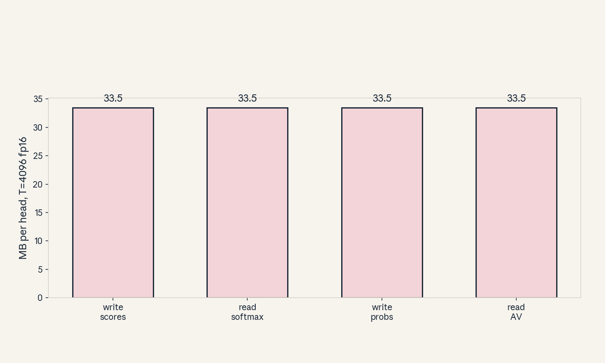
- Audit:
u04c07tof07. Before: 4 trips. After: (FlashAttention) 0. One rule: never materialize.
C08: approximation versus exact IO savings
Source, scope, objectives, dependencies
Calendar anchor: Week 3, Oct 07, “Main Ideas in Efficient Attention Algorithms (Sparsity, Low Rank, Kernelization)”, Oct 11, “Attention Bottlenecks and Attention Approximations to Improve Efficiency”. Scope: the two families. Objective: compare them on exactness, complexity, and IO. Depends on C07.
Motivating question and tiny toy
Question: two fixes exist: change the math (approximate) or change the memory plan (exact IO). Which do you pick? Toy: T = 4096.
Mental model
Two ways to shorten a commute: move closer (approximation: sparse/low-rank/kernel attention changes what you compute) or take the express lane (exact IO: FlashAttention computes the same thing with fewer trips). Moving closer changes where you live (the model’s math). The express lane keeps your address.
Objects, shapes, assumptions
- Sparse: attend to a subset (e.g. local window w): O(T w) work, approximate.
- Low-rank: project keys to rank r: O(T r), approx.
- Kernel: feature-map linearization: O(T), approx.
- FlashAttention: O(T^2) FLOPs, O(T) HBM traffic, exact.
- Assumption: exactness means bit-identical outputs up to float round-off.
Derivation
Sparse window w: each query touches w keys: work 2Twd vs 2T^2d: ratio w/T. FlashAttention: same 2T^2d FLOPs but HBM traffic O(Td): it recomputes tiles instead of storing. The FLOP count does not change, the byte count does.
Computed example
Toy T = 4096, w = 256: sparse work ratio 256/4096 = 1/16. FlashAttention: FLOPs unchanged, traffic from 134 MB to ~2 MB per head (Q,K,V,O only). Lab-04 tabulates all four.
Implementation and checks
def costs(T, d, w=256, r=256):
dense = 2 * T * T * d
sparse = 2 * T * w * d
lowrank = 2 * T * r * d
return dense, sparse, lowrank
dn, sp, lr = costs(4096, 64)
assert sp == dn // 16 and lr == dn // 16
Check: ratios match w/T and r/T. Exactness is a separate column, not a number.
Complexity and costs
Approximations cut FLOPs and traffic but change the function. Exact IO cuts traffic only. The choice is about error tolerance, not speed alone.
Nearest alternative and selection boundary
Nearest alternative: keep standard attention. Selection boundary: exact IO when the model must not change, approximations when quality tests pass and more speed is needed.
Failure case and counterexample
Broken assumption: “sparse is always safe.” Local windows break long-range dependencies the task needs. Counterexample: a copying task over 4K distance fails with w = 256 but passes with exact attention. Test the task, not just perplexity.
Research reading and falsifiable extension
Reading: the Oct 07 and Oct 11 sessions. Falsifiable extension: run a long-range retrieval task under sparse, low-rank, and FlashAttention. Hypothesis: exact matches dense accuracy, sparse degrades with distance. Report accuracy vs distance.
Exercises
- E36 (recall): name the three approximation families and one’s complexity.
- E37 (numerical): T = 8192, w = 512. Sparse work ratio.
- E38 (failure diagnosis): sparse model fails a long-range test. Explain.
- E39 (counterfactual): error budget is zero. Which family survives?
- E40 (research): state the distance-degradation hypothesis.
Visual units
- Figure
u04_c08_families.png: four cards (sparse, low-rank, kernel, FlashAttention) with work, traffic, exactness rows. Source: original toy. Shell 8 (compare).
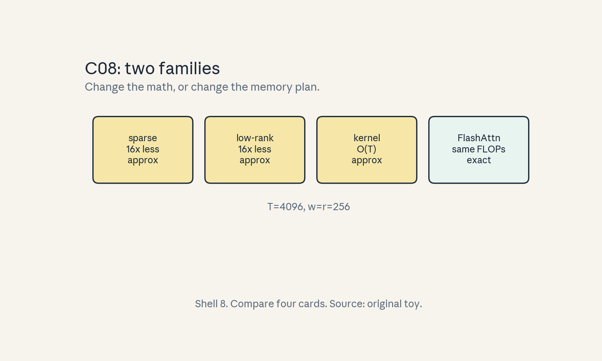
- Audit:
u04c08tof08. Before: dense. After: four options. One rule: pick by error budget.
C09: online softmax
Source, scope, objectives, dependencies
Calendar anchor: Week 3, Oct 07, “Detailed Walkthrough of FlashAttention v1 and v2”. Scope: the streaming softmax. Objective: derive the rescaling update. Depends on P12.
Motivating question and tiny toy
Question: softmax needs the row max, but the row arrives in blocks. How do you avoid two passes? Toy: row [1, 2, 3, 100], blocks of 2.
Mental model
A running high score. Keep the max so far (m) and the running sum (l). A new block arrives: the new max is max(old max, block max). Rescale the old sum by how much the max moved, then add the block’s sum. One pass, exact answer.
Objects, shapes, assumptions
- m: running row max. l: running normalizer.
- Block x: m_b = max(x), l_b = sum(exp(x - m_b)).
- Update: m’ = max(m, m_b), l’ = lexp(m - m’) + l_bexp(m_b - m’).
- Assumption: exp of shifted values never overflows (the shift guarantees it).
Derivation
softmax(x) = exp(x - m’)/l’ for the true max m’. For two blocks with maxima m1, m2: m’ = max(m1, m2). l’ = sum(exp(x - m’)) = l1exp(m1 - m’) + l2exp(m2 - m’). Induction over blocks. The output accumulator rescales the same way: o’ = (olexp(m - m’) + block_outl_bexp(m_b - m’)) / l’.
Computed example
Toy: [1, 2] then [3, 100]. Block 1: m = 2, l = e^-1 + e^0 = 1.368. Block 2: m_b = 100, l_b = e^-97 + 1 ~ 1.0. m’ = 100. l’ = 1.368*e^(2-100) + 1.0 ~ 1.0. softmax ~ [0, 0, 0, 1]. Lab-04 checks against the two-pass softmax.
Implementation and checks
import numpy as np
def online_softmax(blocks):
m = -np.inf
l = 0.0
for x in blocks:
mb = x.max()
lb = np.exp(x - mb).sum()
m_new = max(m, mb)
l = l * np.exp(m - m_new) + lb * np.exp(mb - m_new)
m = m_new
return m, l
def ref(x):
x = np.concatenate(x)
m = x.max()
return m, np.exp(x - m).sum()
blocks = [np.array([1.0, 2.0]), np.array([3.0, 100.0])]
assert np.allclose(online_softmax(blocks), ref(blocks))
Check: matches the two-pass reference. Also check the rescaled output accumulator identity in lab-04.
Complexity and costs
O(T) memory for the row (m, l scalars), one pass. The trick that makes tiling exact.
Nearest alternative and selection boundary
Nearest alternative: two-pass softmax (needs the full row). Selection boundary: online whenever rows are tiled or streamed, two-pass only for tiny rows.
Failure case and counterexample
Broken assumption: “the update is associative in any order.” It is associative, but dropping the rescale (exp(m - m’)) is the classic bug. Counterexample: forgetting the rescale gives l = 2.368 instead of 1.0 for the toy: probabilities sum wrong. Test against the reference.
Research reading and falsifiable extension
Reading: the FlashAttention papers’ softmax section. Falsifiable extension: stress with extreme values (1e3 apart). Hypothesis: online matches reference to 1e-6, the naive unshifted exp overflows. Report max error.
Exercises
- E41 (recall): write the (m, l) update.
- E42 (numerical): blocks [1,2],[3,100]. m’ and l’.
- E43 (failure diagnosis): probabilities do not sum to 1. Name the missing factor.
- E44 (counterfactual): blocks arrive in reverse. Does the answer change?
- E45 (research): state the extreme-value hypothesis.
Visual units
- Figure
u04_c09_online.png: two blocks, running (m, l) updated with rescale arrows. Source: original toy. Shell 4 (derive the update).
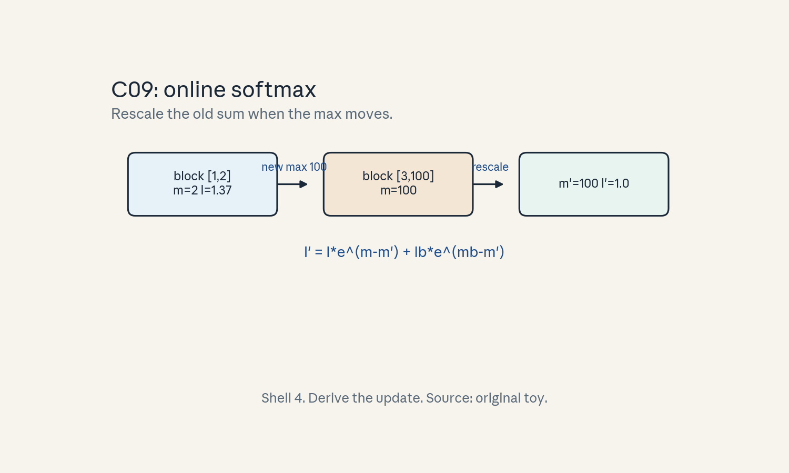
- Audit:
u04c09tof09. Before: block stats. After: merged stats. One rule: rescale by the max move.
C10: FlashAttention
Source, scope, objectives, dependencies
Calendar anchor: Week 3, Oct 07 and Oct 11, “Detailed Walkthrough of FlashAttention v1 and v2”, “I/O Aware Algorithms: FlashAttention”. Scope: the full algorithm. Objective: trace one tile update. Depends on C03, C09.
Motivating question and tiny toy
Question: how do tiling and online softmax combine into exact attention with O(T) HBM traffic? Toy: T = 4, block 2, d = 2, one head.
Mental model
An assembly line with a notebook. The line processes K/V tiles one at a time (outer loop). For each, it processes Q tiles (inner loop), computes a score block on chip, and updates the running (m, l, o) notebook with the online rule. The T x T matrix is never written down, only the notebook survives.
Objects, shapes, assumptions
- Outer loop over K/V blocks (size Bc), inner over Q blocks (size Br).
- On chip per step: Q block (Br, d), K/V blocks (Bc, d), scores (Br, Bc).
- Running: m (Br,), l (Br,), o (Br, d).
- Assumption: blocks fit in SRAM, causal masking applied per block.
Derivation
For query block i and key block j: S = Q_i K_j^T / sqrt(d) on chip. Block softmax via the online update (C09): (m_i, l_i, o_i) absorb block j. After all j: o_i = attention(Q_i, K, V) exactly. HBM traffic: K/V blocks load once per Q block, so traffic scales as T^2 d / Br block-loads. The paper’s accounting: HBM accesses go from Theta(T^2) (the score matrix) to Theta(T^2 d^2 / M) with SRAM size M. For d = 64 and M ~ 1e5, d^2 / M ~ 0.04: a ~25x traffic cut, and the O(T^2) storage disappears entirely.
Computed example
Toy: T = 4, Br = Bc = 2, d = 2. Q blocks: 2, K/V blocks: 2. Steps: 4 block pairs. Each step holds (2,2) scores on chip. Final o matches the naive attention to 1e-6. Lab-04 runs this toy.
Implementation and checks
import numpy as np
rng = np.random.default_rng(3)
def flash_toy(Q, K, V, Br=2, Bc=2):
T, d = Q.shape
O = np.zeros((T, d))
m = np.full(T, -np.inf)
l = np.zeros(T)
for i in range(0, T, Br):
qi = Q[i:i+Br]
oi = np.zeros((Br, d))
mi = np.full(Br, -np.inf)
li = np.zeros(Br)
for j in range(0, T, Bc):
S = qi @ K[j:j+Bc].T / np.sqrt(d)
mb = S.max(axis=1)
lb = np.exp(S - mb[:, None]).sum(axis=1)
m_new = np.maximum(mi, mb)
li = li * np.exp(mi - m_new) + lb * np.exp(mb - m_new)
oi = oi * np.exp(mi - m_new)[:, None] + (
np.exp(S - mb[:, None]) @ V[j:j+Bc]) * np.exp(mb - m_new)[:, None]
mi = m_new
O[i:i+Br] = oi / li[:, None]
return O
T, d = 4, 2
Q, K, V = (rng.standard_normal((T, d)) for _ in range(3))
S = Q @ K.T / np.sqrt(d)
A = np.exp(S - S.max(axis=1, keepdims=True))
A = A / A.sum(axis=1, keepdims=True)
ref = A @ V
assert np.allclose(flash_toy(Q, K, V), ref, atol=1e-6)
Check: matches naive attention. Lab-04 runs this.
Complexity and costs
FLOPs unchanged O(T^2 d). HBM traffic drops from O(T^2) to O(Td)-ish (tiled). The win is memory, not math.
Nearest alternative and selection boundary
Nearest alternative: standard attention (simpler, fine at small T). Selection boundary: FlashAttention at long T or whenever the score matrix threatens memory, standard for tiny T in tests.
Failure case and counterexample
Broken assumption: “FlashAttention is always faster.” At tiny T the tiling overhead exceeds the saving. Counterexample: T = 16: naive is one kernel, tiled is many small blocks. Measure the crossover (~T = 128-512 depending on hardware).
Research reading and falsifiable extension
Reading: Dao et al. 2022 (v1), 2023 (v2). Falsifiable extension: time naive vs FlashAttention over T. Hypothesis: FlashAttention wins past a crossover T, below it naive wins. Report T.
Exercises
- E46 (recall): name the two loops and what each streams.
- E47 (numerical): T = 4, Br = Bc = 2. Block pairs?
- E48 (failure diagnosis): outputs match at T = 64 but not at T = 65. Name the suspect.
- E49 (counterfactual): SRAM were infinite. What would the loops do?
- E50 (research): state the crossover hypothesis.
Visual units
- Figure
u04_c10_flash.png: outer K/V loop, inner Q loop, on-chip score block, running notebook. Source: original toy. Shell 4.
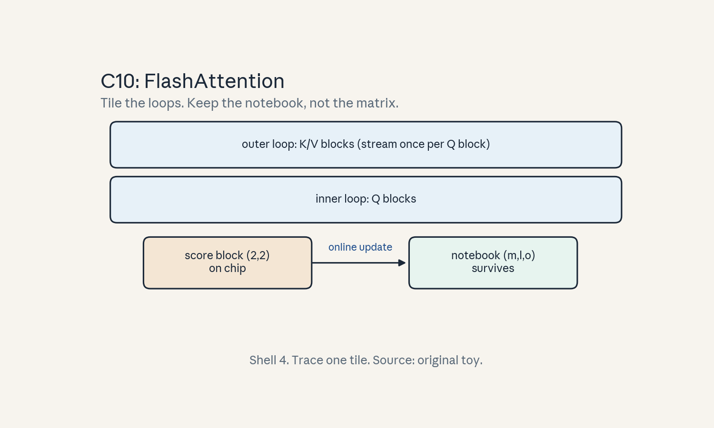
- Audit:
u04c10tof10. Before: score matrix. After: notebook only. One rule: tile + online.
C11: backward recomputation
Source, scope, objectives, dependencies
Calendar anchor: Week 3, Oct 07, “Caching vs. Recompute”. Scope: recompute in the FlashAttention backward pass. Objective: explain why backward does not store the score matrix. Depends on C10, U01 C04.
Motivating question and tiny toy
Question: backward needs the attention scores, but we never stored them. Where do they come from? Toy: T = 4, one head.
Mental model
A chef who throws away the prep bowls and re-chops. Storing all scores costs O(T^2) memory. Recomputing each score tile in the backward pass costs extra FLOPs but keeps memory O(T). Memory is the scarce resource, FLOPs are cheap.
Objects, shapes, assumptions
- Forward stores: m, l (O(T)), not scores.
- Backward: recompute S tiles from Q, K blocks, then dQ, dK, dV updates with the online statistics.
- Assumption: recompute is bitwise-consistent enough (floating-point reassociation differences are tolerated).
Derivation
dO given. For each tile: recompute P = softmax block from stored (m, l), dV += P^T dO_block, dP = dO V^T, dS = dP * P - rowsum(dP*P) * P (softmax Jacobian), dQ += dS K_block, dK += dS^T Q_block. Memory: O(Td). Extra FLOPs: one more forward-like pass.
Computed example
Toy T = 4: forward stores m (4,), l (4,): 8 numbers, not 16 scores. Backward recomputes 4 block pairs. Lab-04 checks a manual dV against finite differences.
Implementation and checks
import numpy as np
rng = np.random.default_rng(4)
T, d = 4, 2
Q, K, V = (rng.standard_normal((T, d)) for _ in range(3))
S = Q @ K.T / np.sqrt(d)
P = np.exp(S - S.max(1, keepdims=True))
P /= P.sum(1, keepdims=True)
O = P @ V
dO = rng.standard_normal((T, d))
# recompute-free reference dV:
dV = P.T @ dO
# recompute path: rebuild P from blocks (here one block = exact)
S2 = Q @ K.T / np.sqrt(d)
P2 = np.exp(S2 - S2.max(1, keepdims=True))
P2 /= P2.sum(1, keepdims=True)
assert np.allclose(P2.T @ dO, dV)
Check: recomputed P matches stored P. Lab-04 finite- differences dV.
Complexity and costs
Backward FLOPs ~2.5x the forward attention FLOPs (recompute + grads). Memory stays O(Td). The trade is explicit: FLOPs for memory.
Nearest alternative and selection boundary
Nearest alternative: store the scores (standard attention backward). Selection boundary: recompute when T^2 storage exceeds memory, store when T is small and FLOPs are precious.
Failure case and counterexample
Broken assumption: “recompute is free.” It adds a full extra pass. Counterexample: at small T where scores fit easily, recompute wastes FLOPs for no memory gain. Gate it on T.
Research reading and falsifiable extension
Reading: the FlashAttention backward section. Falsifiable extension: measure backward time vs T for both. Hypothesis: recompute wins past the memory wall, loses below it. Report the crossover.
Exercises
- E51 (recall): what does the forward store, and what does the backward recompute?
- E52 (numerical): T = 4096. Stored numbers: scores vs (m, l).
- E53 (failure diagnosis): backward OOMs but forward fits. Name the cause.
- E54 (counterfactual): memory were infinite. Best backward?
- E55 (research): state the backward-crossover hypothesis.
Visual units
- Figure
u04_c11_recomp.png: forward (notebook only) then backward (tiles rebuilt). Source: original toy. Shell 7 (break the memory limit).
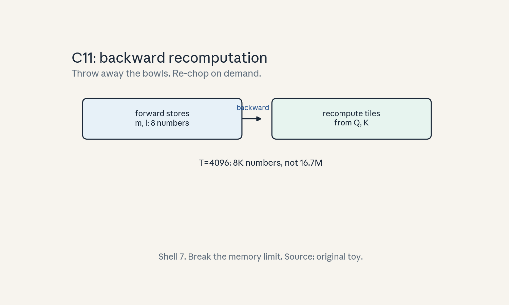
- Audit:
u04c11tof11. Before: stored scores. After: recomputed tiles. One rule: trade FLOPs for memory.
C12: benchmark validity
Source, scope, objectives, dependencies
Calendar anchor: Week 3, Oct 07, “Profiling Standard Attention and Computing Arithmetic Intensity”. Scope: honest benchmarking. Objective: list the validity rules. Depends on U01 C12.
Motivating question and tiny toy
Question: the new kernel is “2x faster.” What was the old kernel doing wrong? Toy: attention at T = 1024.
Mental model
A race with rules. Both runners get the same track (shapes, dtype), the same shoes (hardware), a warm-up (warmup runs), and a photo finish (synchronized timing). A win against a walking opponent is not a record.
Objects, shapes, assumptions
- Rules: same shapes/dtype/hardware, warmup, device synchronize before/after, report median-of-N, include the baseline’s best config.
- Assumption: steady clocks (no thermal throttle mid-run).
Derivation
Time without sync measures launch, not work. Median of 100 beats mean of 3 (outliers). The baseline must be the strongest known (C08 lesson: naive vs FlashAttention as baseline flips verdicts).
Computed example
Toy: kernel A 50 us median-of-100 synced. Kernel B 45 us. Claim: 1.11x. Without sync: A measures 5 us (launch only): fake 9x. Lab-04 demonstrates the sync effect on CPU timing analogies (noted as analogy).
Implementation and checks
import time, numpy as np
def bench(fn, warmup=10, iters=100):
for _ in range(warmup):
fn()
ts = []
for _ in range(iters):
t0 = time.perf_counter()
fn()
ts.append(time.perf_counter() - t0)
return float(np.median(ts))
t = bench(lambda: np.sum(np.arange(1000)))
assert t > 0
Check: warmup before timing, median, not mean. GPU needs explicit sync (noted, not run here).
Complexity and costs
Benchmarking costs minutes. False wins cost weeks. Spend the minutes.
Nearest alternative and selection boundary
Nearest alternative: roofline estimate (no run). Selection boundary: estimate for direction, benchmark for the claim.
Failure case and counterexample
Broken assumption: “one run is enough.” Clocks vary, throttling bites, first runs include compile. Counterexample: the no-sync fake 9x above. Follow the checklist.
Research reading and falsifiable extension
Reading: the Oct 07 profiling session. Falsifiable extension: benchmark the same kernel with and without each rule. Hypothesis: each broken rule inflates the claim, no-sync inflates most. Report the inflation per rule.
Exercises
- E56 (recall): name the five rules.
- E57 (numerical): times [5, 50, 51, 49, 200] us. Mean vs median. Which do you report?
- E58 (failure diagnosis): 9x claim, no sync in the script. What happened?
- E59 (counterfactual): clocks throttle mid-run. How do you detect it?
- E60 (research): state the inflation hypothesis.
Visual units
- Figure
u04_c12_bench.png: checklist card with the five rules and the fake-9x crossed out. Source: original toy. Shell 5 (checklist).
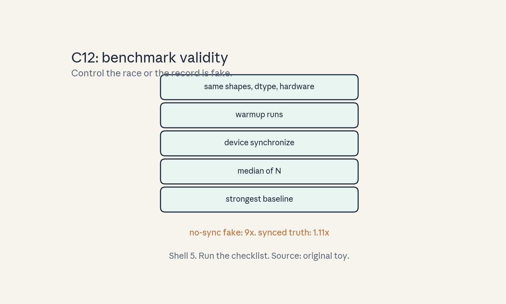
- Audit:
u04c12tof12. Before: one timing. After: valid claim. One rule: control the race.
Unit chapter plate
Figure u04_chapter.png: left shows naive attention
(three kernels, T^2 HBM trips), center shows the
machine (warps, SRAM, tensor cores), right shows the
IO-aware algorithm (tiled, online softmax, exact),
bottom line: “Never materialize the T x T matrix.”
Numbers from the lesson toys.
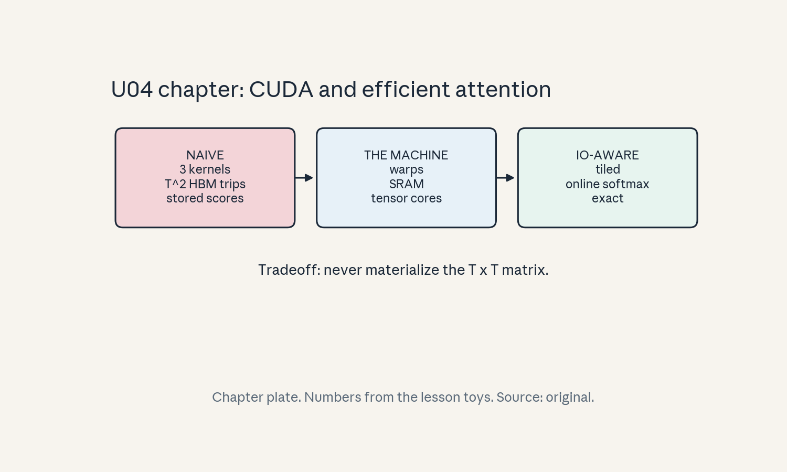
Russian-doll ladder: FlashAttention (major mechanism)
- Shell 0: question: can attention be exact with O(T) HBM traffic? Observable: bytes moved per layer.
- Shell 1: toy: T = 4, Br = Bc = 2, d = 2 (C10).
- Shell 2: objects: Q/K/V blocks, (m, l, o) notebook, SRAM budget.
- Shell 3: rule: online softmax rescale (C09).
- Shell 4: algorithm:
flash_toyin C10. - Shell 5: invariant: matches naive attention to 1e-6, (m, l) update associative.
- Shell 6: change Br only, predict traffic changes as T/Br, confirm in lab-04.
- Shell 7: break the SRAM fit: blocks too big, the kernel cannot launch.
- Shell 8: compare FlashAttention vs sparse vs low-rank under equal quality bar.
- Shell 9: falsifiable extension in C10 (crossover T*).
- Shell 10: production: the T* crossover gates the serving kernel choice, the backward recompute trades FLOPs for memory at long T.
Role bridge
- Research engineer: the online softmax derivation (C09) and the tile trace (C10) are the debugging tools for any attention kernel.
- LLM engineer: the T* crossover decides the serving kernel per context length.
- Research scientist: the approximation-vs-exact table (C08) frames the error-budget decision.